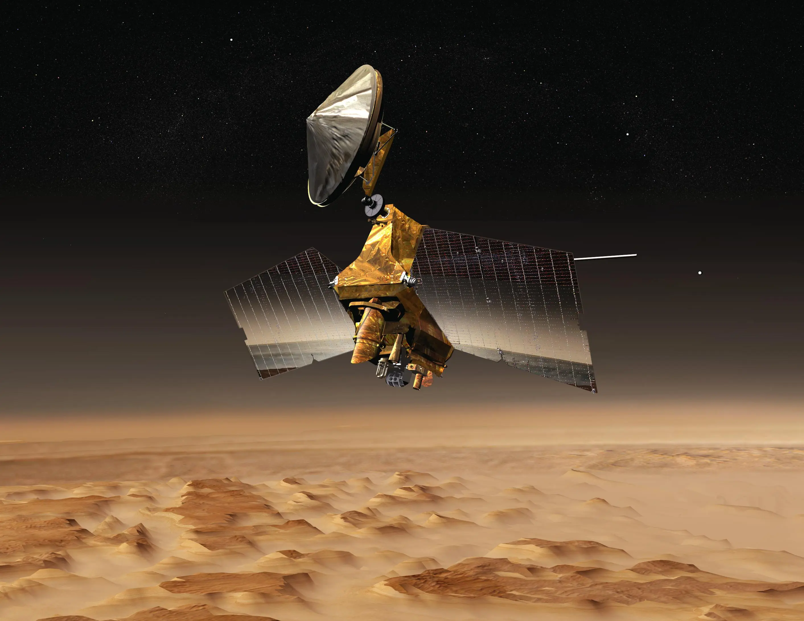

Mars Reconnaissance Orbiter
Data collected by the Mars Resonnaissance helps various engineers and scientists focused on Mars to find areas that can most likely be future landing sites. It is part of the missions that have been set to meet the Mars Exploration Program which focus on past Mars life, current Mars climate shifts, the interior and exterior of Mars and its possibility to harbor human life. In its span of existence the spacecraft has orbited and analyzed Mars from 2006-2014 while aiding the Mars Science Lab and the Mars Exploration Rovers.
"Mars Reconnaissance Orbiter" credits to NASA
Objectives for the Mars Reconnaissance Orbiter
1. Gather climate patterns of Mars while understanding seasonal changes2. Conclude surface terrain on Mars and indetify any past or present trace of water
3. Search in areas where aqueous/hydrothermal activity is present
4. Find areas with strong signs of landed science for sampling
5. Return data from Mars to scientists